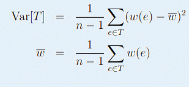

给定带权无向图，求出一颗方差最小的生成树，方差的定义如下：

| F.A.Qs | Home | Discuss | ProblemSet | Status | Ranklist | Contest | 入门OJ | ModifyUser Xeonacid | Logout | 捐赠本站 |
|---|
多组测试数据。第一行为N,M，依次是点数和边数。接下来M行，每行三个整数U,V,W，代表连接U,V的边，和权值W。保证图连通。(1<=U,V<=N<=50,N-1<=M<=1000,0<=W<=50)
输出最小方差，四舍五入到0.01。输出格式按照样例。
N=m=0标志着测试文件的结束。